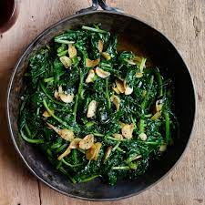

!DOCTYPE HTML>
Sauteed Spinach
Sauteed Spinach

Description
Popeye was the best thing that ever hit the spinach industry. When I was a kid you couldn't pay me to eat lima beans or peas, but spinach? I begged for it; we all did. For this recipes all you're going to need is a pan, spinach, butter, cloves of garlic, some oil of your choice.
Ingridients
- Spinach
- Butter
- Cloves of garlic
- Some oil
Steps
- Preheat pan with some oil and garlic cloves for a few min
- Put in spinach
- After spinach starts shrinking a bit add in your butter and start stirring
- Keep stirring the spinach and everything all together for about 2-3 min
- Serve and enjoy